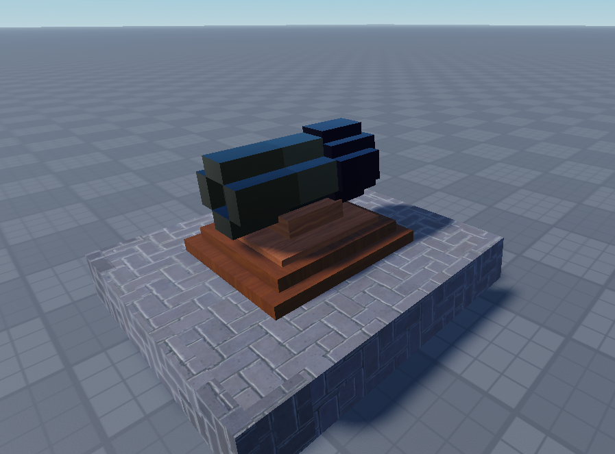
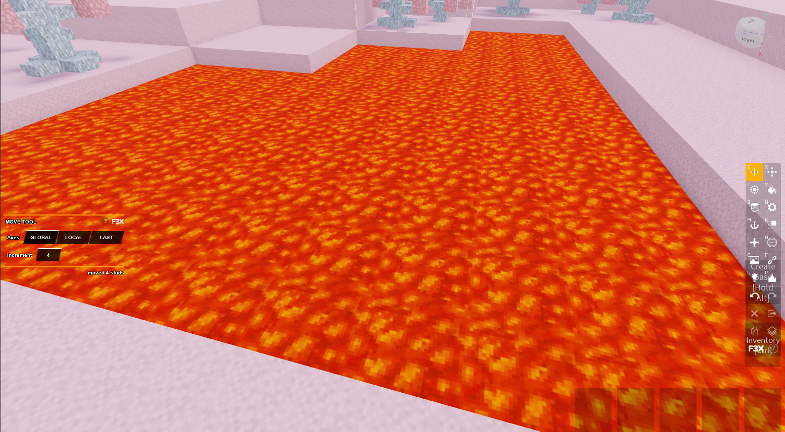

Teritoria
Platform
Roblox (PC, iPad, Mobile)
Status
Unreleased
Team Size
~25
Tools
Roblox Studio
Blender
Photoshop
Blender
Photoshop
Role
3D Artist
Overview
Teritoria is a collaborative Roblox project developed with a team of over 30 students, featuring multiple stylized biomes and a strong emphasis on environmental storytelling.
As a 3D Artist, I focused on creating pixel-styled textures and assets for environments, props, and weapons, helping establish a cohesive visual identity across the game world.
Role & Contributions
3D Art & Texturing
Created pixel-styled textures for biomes, props, and weapons.
Created pixel-styled textures for biomes, props, and weapons.
Asset Creation
Modeled and textured assets using Blender and Photoshop.
Modeled and textured assets using Blender and Photoshop.
Collaboration
Worked within a team of ~25 developers and participated in monthly playtests.
Worked within a team of ~25 developers and participated in monthly playtests.
Art Direction Support
Maintained consistent visual style across all biomes and assets.
Maintained consistent visual style across all biomes and assets.
Art Gallery
Biome textures
Biome textures

Weapon asset

Lava
World view
Reflection
This project strengthened my ability to collaborate in large teams and maintain visual consistency across a shared game world. It also improved my efficiency with asset pipelines from Blender to Roblox Studio.